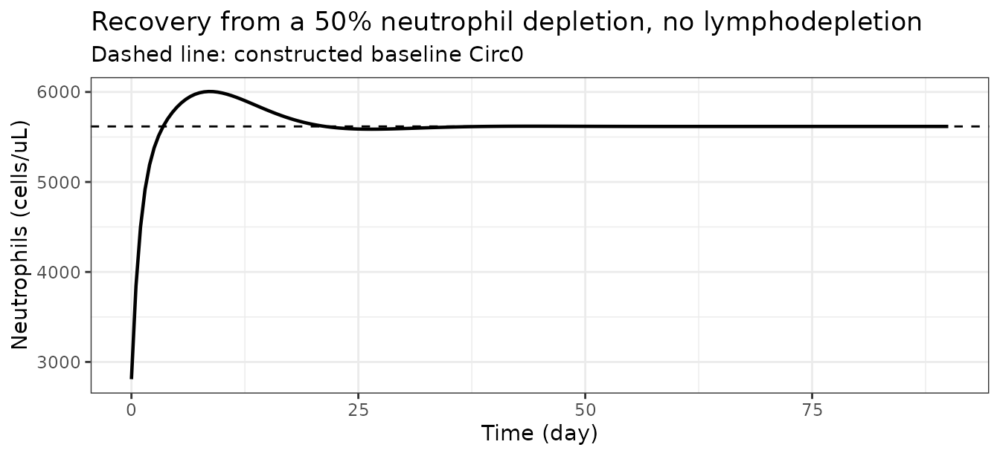
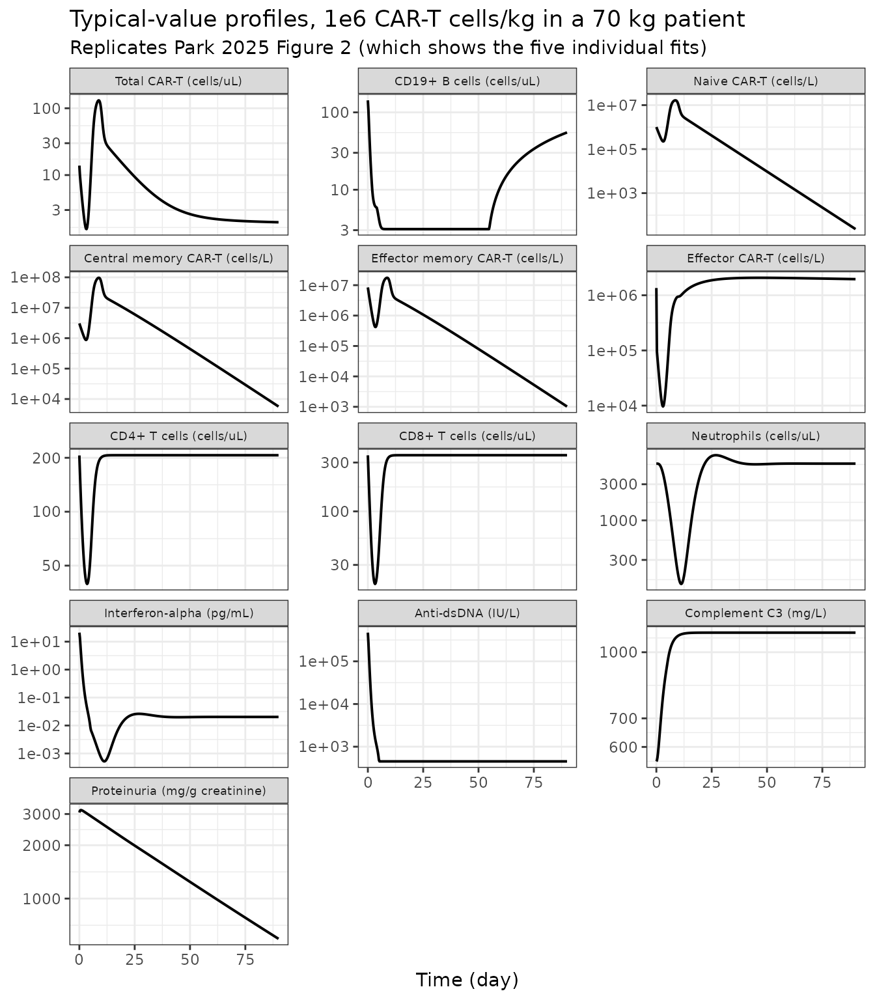
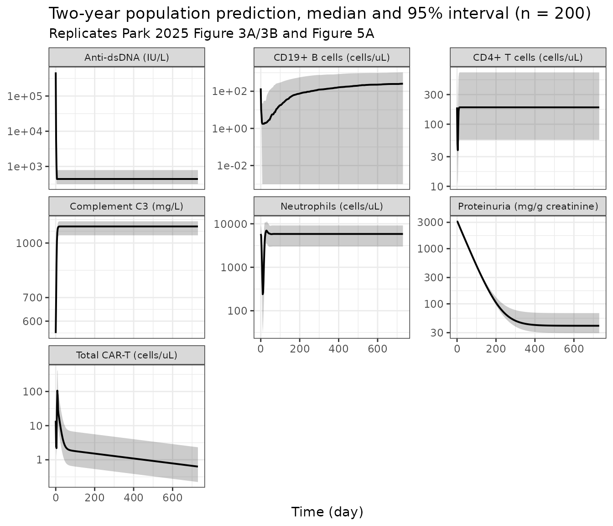
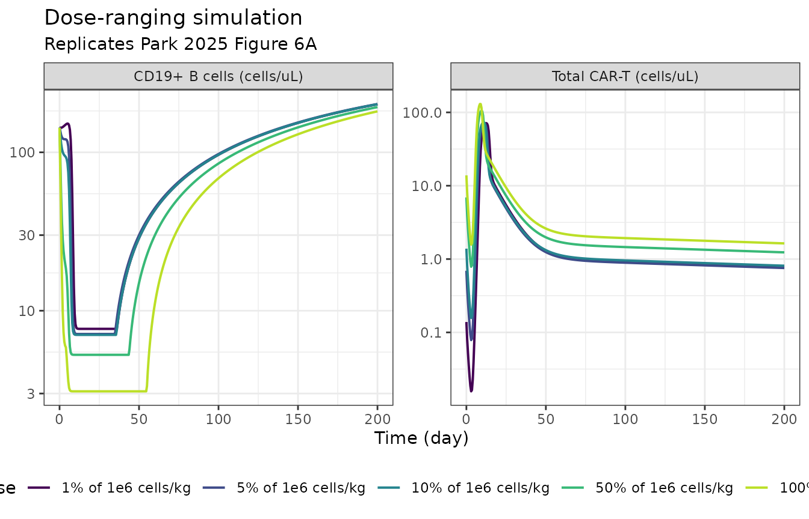
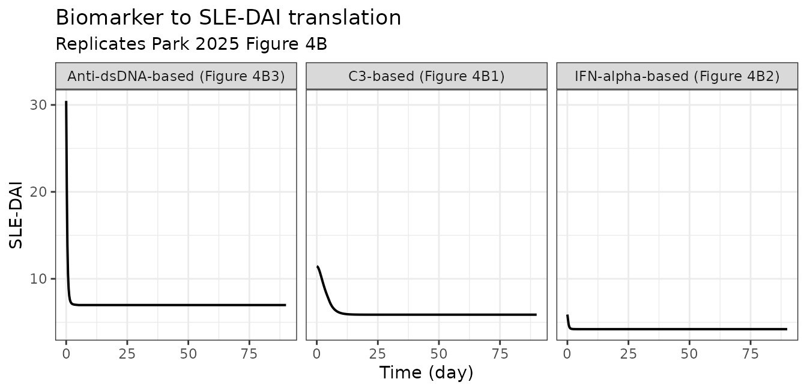

Anti-CD19 CAR-T cell therapy in systemic lupus erythematosus QSP (Park 2025)
Source:vignettes/articles/Park_2025_cd19_cart_sle_qsp.Rmd
Park_2025_cd19_cart_sle_qsp.Rmd
ui <- rxode2::rxode2(readModelDb("Park_2025_cd19_cart_sle_qsp"))
#> ℹ parameter labels from comments will be replaced by 'label()'
mod_typical <- rxode2::zeroRe(readModelDb("Park_2025_cd19_cart_sle_qsp"))
#> ℹ parameter labels from comments will be replaced by 'label()'
#> Warning: No sigma parameters in the modelModel and source
- Citation: Park H, Mugundu GM, Singh AP. Mechanistic Evaluation of Anti-CD19 CAR-T Cell Therapy Repurposed in Systemic Lupus Erythematosus Using a Quantitative Systems Pharmacology Model. Clin Transl Sci. 2025;18(2):e70146. doi:10.1111/cts.70146
- Article (open access): https://doi.org/10.1111/cts.70146
- Appendix S1 (narrative, equations 1-53, the SLE-DAI regression
output):
CTS-18-e70146-s003.docx - Appendix S2 (the complete Monolix MLXTRAN control stream):
CTS-18-e70146-s004.docx - Figures S1 (individual observed data) and S2 (goodness of fit):
CTS-18-e70146-s001.pdf,CTS-18-e70146-s002.pdf
Both appendices are distributed through the PubMed Central open-access package for PMC11815715.
This is a deterministic-structure quantitative systems pharmacology model with population inter-individual variability, not a population PK model. There is no drug concentration anywhere in it: the “dose” is a number of CAR-positive T cells per kilogram, and the lymphodepletion chemotherapy enters through a kinetic-pharmacodynamic (K-PD) compartment because no fludarabine or cyclophosphamide concentrations were measured.
The authoritative source for every equation is the Appendix S2 control stream - the code that actually produced the published figures. Appendix S1 prints the same system as typeset equations, and where the two disagree the control stream is used here; each such case is listed under Assumptions and deviations.
Solver settings
# Converged, robust settings for this model - see "Solver behaviour" below.
AT <- 1e-6
RT <- 1e-8
solve_typical <- function(times, WT = 70, atol = AT, rtol = RT, ...) {
ev <- rxode2::et(times)
ev$WT <- WT
as.data.frame(rxode2::rxSolve(mod_typical, ev, omega = NA,
atol = atol, rtol = rtol, ...))
}The state vector spans about forty orders of magnitude: bone-marrow
CAR-T pools reach 1e11 cells/L while the eradicated CD19+ B
cell pools fall below 1e-25 cells/L. With
rxode2’s default atol = 1e-8 the solver
demands a step size below double-precision resolution when total CAR-T
cells cross the CARTrev.min reconstitution threshold late
in a two-year simulation, and a fraction of simulated subjects fail to
integrate. atol = 1e-6 with rtol = 1e-8 is
both converged and robust. Both claims
are checked mechanically rather than asserted: Solver behaviour tightens the tolerances
and asserts the reported outputs are unchanged, and the 200-subject
cohort below asserts that every subject integrates and that no output is
NA. Use these settings for any long-horizon simulation of
this model.
Population
pop <- ui$population
tibble::tibble(
Field = names(pop),
Value = vapply(pop, function(x) paste(as.character(x), collapse = "; "), character(1))
) |>
knitr::kable()| Field | Value |
|---|---|
| species | human |
| n_subjects | 5 |
| n_studies | 1 |
| age_range | 18-24 years |
| weight_range | not reported by Park 2025; 70 kg reference used |
| sex_female_pct | 80 |
| disease_state | Severe, treatment-refractory systemic lupus erythematosus. Model qualification used an external cohort of 13 additional patients (7 SLE, 6 other B cell-mediated autoimmune diseases) followed for up to 2 years. |
| dose_range | 1 x 10^6 FMC63-based anti-CD19 CAR-positive T cells/kg as a single intravenous infusion. Lymphodepletion: fludarabine 25 mg/m2/day on days -5 to -3 plus cyclophosphamide 1000 mg/m2 on day -3. Model-based dose-ranging covered 1, 5, 10, 50 and 100% of the clinical dose. |
| regions | Germany (Erlangen); Mackensen 2022 / Muller 2024 case series. |
| notes | Four female (18-24 years) and one male (23 years) SLE patient. Infusion product composition 75.9% CD4+ and 23.0% CD8+ CAR-T cells, with 7.29% naive, 22.1% central memory, 60.9% effector memory and 9.77% effector immunophenotypes (Methods 2.1 and Appendix S1). Cellular kinetics and biomarker profiles were digitized by the authors from Mackensen 2022 (Nat Med 28:2124-2132) and Muller 2024. |
Individual body weights are reported nowhere in Park 2025 or in
either appendix, and the clinical study that supplied the
cellular-kinetic data (Mackensen 2022, Nat Med 28:2124-2132) is
not open access, so none could be verified from the sources on disk.
WT is a user-supplied covariate and every allometric term
in the model is normalized to 70 kg, which is the reference used
throughout this vignette. Supply a different weight through the
WT column to scale Vb, Vbm, the
administered cell number, the C3 synthesis rate and the urine volume
together.
Source trace
Equations
Every differential equation in the model file is a transcription of the Appendix S2 control stream; Appendix S1 numbers the same equations.
| Component | Model file | Source location |
|---|---|---|
| CAR-T immunophenotypes, peripheral blood | d/dt(cd[48]_{tn,cm,em,ef}_pb) | Appendix S1 eq 1-4 |
| CAR-T immunophenotypes, bone marrow | d/dt(cd[48]_{tn,cm,em,ef}_bm) | Appendix S1 eq 5-8 |
| Free CAR / free CD19 antigen, blood | car_free_*_pb, ag_free_pb | Appendix S1 eq 9-10 |
| CAR-target complex, blood | d/dt(cplx_cd[48]_pb) | Appendix S1 eq 11 |
| Complexes per CAR-T cell / per B cell | cplx_per_cart_, cplx_per_b_ | Appendix S1 eq 12-13 |
| Expansion and killing Emax functions | kexp_, kkill_ | Appendix S1 eq 14-15 |
| Reactive CD19+ B cells, blood | d/dt(cd19b_pb) | Appendix S1 eq 16 |
| Naive CD19+ B cell reconstitution | d/dt(cd19b_rev_pb), k_rev switch | Appendix S1 eq 17-18 |
| Target engagement, bone marrow | ag_free_bm, d/dt(cplx_cd[48]_bm) | Appendix S1 eq 19-25 |
| CD19+ B cells, bone marrow | d/dt(cd19b_bm) | Appendix S1 eq 26 |
| Lymphodepletion K-PD and Emax effects | d/dt(ldc), eff_cd4/cd8/nt | Appendix S1 eq 27-28 |
| Host T cell baselines | cd4t_base, cd8t_base | Appendix S1 eq 29-30 |
| Host CD4+/CD8+ precursor-dependent IDR | d/dt(cd4t_pre), d/dt(cd4t), … | Appendix S1 eq 31-34 |
| Friberg neutrophil chain | ktr_nt, d/dt(nt_prol), … | Appendix S1 eq 35-41 |
| Host-cell and IFN-alpha signal terms | stimulation / activation ratios | Appendix S1 eq 42-44 |
| Anti-dsDNA autoantibody release switch | kgen_aab, kdeg_aab, d/dt(aab) | Appendix S1 eq 45-47 |
| Interferon-alpha turnover | ifn_rel, d/dt(ifna) | Appendix S1 eq 48-49 |
| Complement C3 turnover | kdeg_c3, d/dt(c3) | Appendix S1 eq 50-51 |
| Proteinuria turnover | kdeg_ptu, d/dt(ptu) | Appendix S1 eq 52-53 |
| SLE-DAI translation | sledaiC3, sledaiIfna, sledaiAab | Park 2025 Figure 4A; Appendix S1 regression output |
Parameters
Every ini() entry carries an in-file comment naming its
source location. The table below is generated from the model object.
| Parameter | Estimate | Fixed | Label |
|---|---|---|---|
| lkexp_max | 5.87787e-01 | no | Maximum first-order CAR-T expansion rate constant, CD8+ subset (KexpMax, 1/day) |
| lkkill_max | 1.01523e+00 | no | Maximum first-order CD19+ B cell killing rate constant (KkillMax, 1/day) |
| lec50_exp | -1.08711e+01 | yes | CAR-target complexes per effector cell giving 50% of maximum expansion (EC50exp, number/cell) |
| lrm1 | -1.89712e+00 | no | Differentiation rate constant, naive to central memory (Rm1, 1/day) |
| lrm2 | -2.20727e+00 | no | Differentiation rate constant, central memory to effector memory (Rm2, 1/day) |
| lrm3 | -3.28504e-01 | no | Differentiation rate constant, effector memory to effector (Rm3, 1/day) |
| lkel_e | 3.85820e+00 | no | Elimination rate constant of effector CAR-T cells (Kel.e, 1/day) |
| lkel_m | -3.71064e-01 | no | Elimination rate constant of naive and memory CAR-T cells (Kel.m, 1/day) |
| lk12 | 3.43590e-01 | no | Distribution rate constant, blood to bone marrow (K12, 1/day) |
| lk21 | -6.37713e+00 | no | Redistribution rate constant, bone marrow to blood (K21, 1/day) |
| lkc50_cart | 2.04252e+00 | no | CAR-target complexes per CD19+ B cell giving 50% of maximum killing (KC50, number/cell) |
| lcart_rev_min | 8.67100e-01 | no | Total CAR-T threshold below which naive B cell reconstitution starts (CARTrev.min, cells/uL) |
| lk0_rev_cd19b | 1.42729e+01 | no | Zero-order generation rate constant of naive CD19+ B cells (K0.rev, cells/L/day) |
| lcd19b_pb_max | 1.99225e+01 | no | Maximum CD19+ B cell level in peripheral blood (CD19B.PB.max, cells/L) |
| lrbase_cd19b | 1.87784e+01 | yes | Baseline reactive CD19+ B cells in peripheral blood (cells/L) |
| cd19b_bm_0 | 1.50000e+09 | yes | Baseline CD19+ B cells in bone marrow (cells/L) |
| kg_cd19b | 1.93000e-02 | yes | First-order proliferation rate constant of CD19+ B cells (1/day) |
| density_car | 1.50000e+04 | yes | CAR density on the CAR-T cell surface (receptors/cell) |
| density_cd19b | 1.40000e+04 | yes | CD19 antigen density on the CD19+ B cell surface (antigens/cell) |
| kon_car | 2.10000e+05 | yes | Association rate constant of the FMC63 CAR for CD19 (1/M/s) |
| koff_car | 6.81000e-05 | yes | Dissociation rate constant of the FMC63 CAR from CD19 (1/s) |
| vb_ref | 5.00000e+00 | yes | Peripheral blood volume at the 70 kg reference weight (L) |
| vbm_ref | 1.60000e+00 | yes | Bone marrow volume at the 70 kg reference weight (L) |
| ratio_kexp | 1.12000e+00 | yes | Ratio of the CD8+ to CD4+ maximum expansion rate constants (unitless) |
| lkel_ldc | 3.29304e-01 | no | First-order elimination rate constant of the K-PD lymphodepletion signal (1/day) |
| kprol_cd4pre | 7.00000e-04 | yes | Differentiation rate constant, precursor to CD4+ T cells (1/day) |
| lk0_cd4pre | 5.34796e+00 | no | Zero-order proliferation rate constant of the CD4+ T cell precursor (cells/uL/day) |
| lkout_cd4 | 1.98026e-02 | no | First-order disappearance rate constant of host CD4+ T cells (1/day) |
| lemax_cd4 | -1.62519e-01 | no | Maximum LDC effect on host CD4+ T cells (unitless) |
| lec50_cd4 | -1.89712e+00 | yes | LDC concentration producing 50% of the maximum CD4+ T cell effect (mg/L) |
| kprol_cd8pre | 4.50000e-04 | yes | Differentiation rate constant, precursor to CD8+ T cells (1/day) |
| lk0_cd8pre | 6.26452e+00 | no | Zero-order proliferation rate constant of the CD8+ T cell precursor (cells/uL/day) |
| lkout_cd8 | 3.98776e-01 | no | First-order disappearance rate constant of host CD8+ T cells (1/day) |
| lemax_cd8 | -4.08220e-02 | no | Maximum LDC effect on host CD8+ T cells (unitless) |
| lec50_cd8 | -2.70306e+00 | yes | LDC concentration producing 50% of the maximum CD8+ T cell effect (mg/L) |
| lrbase_nt | 8.63359e+00 | no | Steady-state circulating neutrophil count (cells/uL) |
| lmtt_nt | 1.47018e+00 | yes | Mean transit time of the neutrophil proliferation chain (day) |
| lgamma_nt | -1.96611e+00 | no | Feedback exponent on the circulating neutrophil count (unitless) |
| lemax_nt | 3.30762e+00 | no | Maximum LDC effect on host neutrophils (unitless) |
| lec50_nt | 7.09292e+00 | yes | LDC concentration producing 50% of the maximum neutrophil effect (mg/L) |
| lksyn_aab | 9.67255e+00 | no | Release rate of anti-dsDNA autoantibodies from reactive B cells (IU/cell/day) |
| lkdeg_ifna | 3.13723e+00 | yes | Degradation rate constant of interferon-alpha in peripheral blood (1/day) |
| n_pdc | 1.14679e+06 | yes | Circulating plasmacytoid dendritic cell count (cells/L) |
| lgamma_c3 | -2.30259e+00 | no | Shaping exponent for the anti-dsDNA drive on C3 catabolism (unitless) |
| ksyn_c3 | 1.50000e+00 | yes | Zero-order synthesis rate of complement C3 (mg/kg/h) |
| lgamma_ptu | 8.61777e-02 | no | Shaping exponent for the C3 drive on proteinuria (unitless) |
| ksyn_ptu | 1.00000e+03 | yes | Zero-order urinary protein excretion rate (mg/day) |
| lgamma_ifna_cd4 | -2.40795e+00 | no | Shaping exponent for interferon-alpha activation of anti-dsDNA release (unitless) |
| lgamma_ifna_cd8 | -2.23144e-01 | no | Shaping exponent for interferon-alpha activation of proteinuria (unitless) |
| lrbase_aab | 1.30605e+01 | yes | Baseline anti-dsDNA autoantibody concentration (IU/L) |
| lrbase_ifna | 3.04452e+00 | yes | Baseline interferon-alpha concentration (pg/mL) |
| lrbase_c3 | 6.31897e+00 | yes | Baseline complement C3 concentration (mg/L) |
| lrbase_ptu | 8.02617e+00 | yes | Baseline urinary protein excretion (mg/g creatinine) |
| dose_cart | 1.00000e+06 | yes | Administered CAR-positive T cell dose (cells/kg) |
| pct_cd4 | 7.59000e+01 | yes | CD4+ fraction of the infused CAR-T product (percent) |
| pct_cd8 | 2.30000e+01 | yes | CD8+ fraction of the infused CAR-T product (percent) |
| pct_tn | 7.29000e+00 | yes | Naive fraction of the infused CAR-T product (percent) |
| pct_tcm | 2.21000e+01 | yes | Central memory fraction of the infused CAR-T product (percent) |
| pct_tem | 6.09000e+01 | yes | Effector memory fraction of the infused CAR-T product (percent) |
| pct_tef | 9.77000e+00 | yes | Effector fraction of the infused CAR-T product (percent) |
| dose_ldc | 1.93500e+03 | yes | Total lymphodepletion chemotherapy amount entering the K-PD compartment (mg) |
| sledai_c3_int | 1.69900e+01 | yes | SLE-DAI intercept for the complement C3 regression (score) |
| sledai_c3_slope | -1.00000e-02 | yes | SLE-DAI slope on complement C3 (score per mg/L) |
| sledai_ifna_int | 4.21000e+00 | yes | SLE-DAI intercept for the interferon-alpha regression (score) |
| sledai_ifna_slope | 8.00000e-02 | yes | SLE-DAI slope on interferon-alpha (score per pg/mL) |
| sledai_aab_int | 6.96000e+00 | yes | SLE-DAI intercept for the anti-dsDNA regression (score) |
| sledai_aab_slope | 5.00000e-02 | yes | SLE-DAI slope on anti-dsDNA autoantibodies (score per IU/mL) |
| Random effect | Variance (omega^2) | omega (Park 2025 Table 1) | Fixed |
|---|---|---|---|
| etalkexp_max | 0.002500 | 0.050 | no |
| etalkkill_max | 0.007569 | 0.087 | no |
| etalec50_exp | 0.040000 | 0.200 | yes |
| etalcart_rev_min | 0.656100 | 0.810 | no |
| etalk0_rev_cd19b | 1.081600 | 1.040 | no |
| etalcd19b_pb_max | 0.656100 | 0.810 | no |
| etalk0_cd4pre | 0.462400 | 0.680 | no |
| etalkout_cd4 | 0.022500 | 0.150 | no |
| etalkout_cd8 | 0.250000 | 0.500 | no |
| etalrbase_nt | 0.084100 | 0.290 | no |
| etalmtt_nt | 0.040000 | 0.200 | yes |
| etalemax_nt | 0.067600 | 0.260 | no |
| etalksyn_aab | 0.160000 | 0.400 | no |
| etalkdeg_ifna | 0.040000 | 0.200 | yes |
Park 2025 Table 1 reports the random effect as omega. Appendix S1 states that model fitting used the SAEM algorithm of Monolix 2023R1 with a log-normal IIV distribution, so the tabulated omega is the standard deviation of the normally-distributed eta on the log-transformed parameter; the model file therefore stores omega^2.
Units and dimensional analysis
| Quantity | Units | Note |
|---|---|---|
| Time | day | All rate constants are per day. |
| CAR-T immunophenotype states | cells/L | Reported outputs tnCart/cmCart/emCart/efCart are the CD4+ plus CD8+ sums, matching Park 2025 Figure 2 (cells/L). |
| totalCart, bCell, cd4t, cd8t, nt | cells/uL | totalCart and bCell apply the 1e-6 conversion in Appendix S2; the host-cell states are natively per uL (Circ0.NT = 5617 cells/uL). |
| CAR-target complexes | number/L | kon converted from 1/(M s) by 86400 / 6.023e23; koff from 1/s by 86400. |
| Complexes per cell | number/cell | Drives EC50exp (1.9e-5 per effector cell) and KC50 (7.71 per B cell). |
| ldc | mg | K-PD amount; c_ldc = ldc / Vb in mg/L, matched to EC50 values in mg/L. |
| aab | IU/L | Ksyn.AAb is IU/cell/day; multiplied by cells/L gives IU/L/day. |
| ifna | pg/L | State is pg/L; the reported output ifnaConc = ifna / 1000 is pg/mL, as plotted in Figure S1E. |
| c3 | mg/L | Synthesis 1.5 mg/kg/h x 24 h x WT kg = mg/day, divided by Vb (L) gives mg/L/day. |
| ptu | mg/g creatinine | Excretion 1000 mg/day divided by Vu (dL/day); the paper reports urine protein per gram creatinine and treats the baseline regressor as the unit anchor. |
| Vb, Vbm | L | 5 and 1.6 L at 70 kg, scaled linearly with WT. |
| Vu | dL/day | 1 cc/kg/h = WT x 24 / 100 dL/day. |
The body-weight dependence cancels in the complement C3 turnover
rate:
ksyn_c3_day / (rbase_c3 * vb) = (1.5 * 24 * WT) / (rbase_c3 * 5 * WT / 70)
= 504 / rbase_c3 per day, independent of WT. It does
not cancel in the proteinuria turnover rate,
ksyn_ptu / (vu * rbase_ptu), which is inversely
proportional to body weight.
Validation
PKNCA-based non-compartmental analysis is not
applicable: there is no concentration-time profile of an administered
drug. The checks below follow the mechanistic-model pattern - baseline
flux balance, steady-state hold, perturbation recovery, closed-form
identities, and replication of the published figures.
1. Baseline flux balance
Four of the model’s turnover states are constructed so that the
pre-treatment baseline is an exact steady state: the degradation rate
constant is back-calculated from the synthesis rate and the baseline.
This is checked symbolically, from the ini() values,
without solving the ODEs.
p <- setNames(ui$iniDf$est, ui$iniDf$name)
lin <- function(nm) if (startsWith(nm, "l")) exp(p[[nm]]) else p[[nm]]
WT <- 70
vb <- lin("vb_ref") * WT / 70
vu <- WT * 24 / 100
b0 <- lin("lrbase_cd19b")
aab0 <- lin("lrbase_aab")
c30 <- lin("lrbase_c3")
ifna0 <- lin("lrbase_ifna") * 1000
ptu0 <- lin("lrbase_ptu")
nt0 <- lin("lrbase_nt")
flux <- tibble::tribble(
~State, ~`d/dt at baseline`, ~`Steady state?`,
"cd4t",
(lin("lk0_cd4pre") / p[["kprol_cd4pre"]]) * p[["kprol_cd4pre"]] -
(lin("lk0_cd4pre") / lin("lkout_cd4")) * lin("lkout_cd4"),
"yes, by construction (Appendix S1 eq 29, 31-32)",
"cd8t",
(lin("lk0_cd8pre") / p[["kprol_cd8pre"]]) * p[["kprol_cd8pre"]] -
(lin("lk0_cd8pre") / lin("lkout_cd8")) * lin("lkout_cd8"),
"yes, by construction (Appendix S1 eq 30, 33-34)",
"ifna",
p[["n_pdc"]] * (ifna0 * lin("lkdeg_ifna") / p[["n_pdc"]]) - ifna0 * lin("lkdeg_ifna"),
"yes, by construction (Appendix S1 eq 48-49)",
"aab",
b0 * lin("lksyn_aab") - aab0 * (b0 * lin("lksyn_aab") / aab0),
"yes, by construction (Appendix S1 eq 46-47)",
"c3",
(p[["ksyn_c3"]] * 24 * WT -
(p[["ksyn_c3"]] * 24 * WT / (c30 * vb)) * c30 * vb) / vb,
"yes, by construction (Appendix S1 eq 50-51)",
"cd19b_pb",
p[["kg_cd19b"]] * b0,
"no - the reactive pool has no homeostatic loss term and grows at Kg in the absence of CAR-T killing",
"ptu",
(p[["ksyn_ptu"]] * exp(1) * exp(1) - ptu0 * vu * (p[["ksyn_ptu"]] / (vu * ptu0))) / vu,
"no - Appendix S2 applies the CD8+ T cell and neutrophil signals as exp(x/x0), which equals e rather than 1 at baseline"
)
flux |>
dplyr::mutate(`d/dt at baseline` = signif(`d/dt at baseline`, 4)) |>
knitr::kable()| State | d/dt at baseline | Steady state? |
|---|---|---|
| cd4t | 0.0 | yes, by construction (Appendix S1 eq 29, 31-32) |
| cd8t | 0.0 | yes, by construction (Appendix S1 eq 30, 33-34) |
| ifna | 0.0 | yes, by construction (Appendix S1 eq 48-49) |
| aab | 0.0 | yes, by construction (Appendix S1 eq 46-47) |
| c3 | 0.0 | yes, by construction (Appendix S1 eq 50-51) |
| cd19b_pb | 2760000.0 | no - the reactive pool has no homeostatic loss term and grows at Kg in the absence of CAR-T killing |
| ptu | 380.3 | no - Appendix S2 applies the CD8+ T cell and neutrophil signals as exp(x/x0), which equals e rather than 1 at baseline |
stopifnot(
abs(flux$`d/dt at baseline`[1:5]) <
c(1e-9, 1e-9, 1e-9, 1e-3, 1e-9) * c(1, 1, ifna0, aab0, c30)
)The two states that are not at steady state are properties of the published model, not of this transcription; both are discussed under Assumptions and deviations.
2. Steady-state hold of the host immune cells
Setting the lymphodepletion amount to zero removes the only forcing on the host CD4+ / CD8+ T cell and neutrophil subsystems. They must then hold at their constructed baselines for the full two years.
hold <- solve_typical(seq(0, 730, by = 1), params = c(dose_ldc = 0))
drift <- c(
cd4t = max(abs(hold$cd4t / hold$cd4t[1] - 1)),
cd8t = max(abs(hold$cd8t / hold$cd8t[1] - 1)),
nt = max(abs(hold$nt / hold$nt[1] - 1))
)
tibble::tibble(
State = names(drift),
`Baseline` = signif(c(hold$cd4t[1], hold$cd8t[1], hold$nt[1]), 6),
`Expected (K0/Kout, Circ0)` = signif(
c(lin("lk0_cd4pre") / lin("lkout_cd4"),
lin("lk0_cd8pre") / lin("lkout_cd8"),
nt0), 6),
`Max relative drift over 730 days` = signif(drift, 3)
) |>
knitr::kable()| State | Baseline | Expected (K0/Kout, Circ0) | Max relative drift over 730 days |
|---|---|---|---|
| cd4t | 206.059 | 206.059 | 0 |
| cd8t | 352.745 | 352.745 | 0 |
| nt | 5617.220 | 5617.220 | 0 |
3. Perturbation recovery of the neutrophil chain
Displacing the circulating neutrophil pool to half its baseline (an
evid = 5 replacement record on the nt
compartment, since the model sets the initial condition in
model() and would otherwise ignore inits =)
must trigger the Friberg feedback term (Circ0/NT)^gamma and
drive the pool back to baseline.
A transit chain with proliferative feedback is a damped oscillator, not a monotone relaxation: the feedback term over-corrects while the depleted signal is still propagating down the three transit compartments, so the pool overshoots baseline once and then rings back down. The checks below therefore assert the properties the Friberg structure actually implies - a single overshoot of modest amplitude, a decaying oscillation, and exact return to baseline - rather than monotonicity. The same overshoot is visible in the observed data: the neutrophil panel of Figure S1C rebounds above each patient’s pre-treatment level around day 15-30 before settling.
ev_pert <- rxode2::et(amt = 0.5 * nt0, cmt = "nt", evid = 5, time = 0) |>
rxode2::et(seq(0, 90, by = 0.5))
ev_pert$WT <- 70
pert <- as.data.frame(rxode2::rxSolve(mod_typical, ev_pert, omega = NA,
atol = AT, rtol = RT,
params = c(dose_ldc = 0)))
ggplot(pert, aes(time, nt)) +
geom_hline(yintercept = nt0, linetype = "dashed") +
geom_line(linewidth = 0.8) +
labs(x = "Time (day)", y = "Neutrophils (cells/uL)",
title = "Recovery from a 50% neutrophil depletion, no lymphodepletion",
subtitle = "Dashed line: constructed baseline Circ0") +
theme_bw()
recovery_err <- abs(pert$nt[nrow(pert)] / nt0 - 1)
overshoot <- max(pert$nt) / nt0
# Amplitude of the first ring above baseline vs the second, as a decay check.
above <- pert$nt - nt0
ring1 <- max(above[pert$time > 0 & pert$time <= 20])
ring2 <- max(above[pert$time > 30])
cat(sprintf(
"nt(0) = %.1f, peak = %.1f (%.3fx baseline) at day %.1f, nt(90 d) = %.1f,\nbaseline = %.1f, relative error = %.2g, ring decay = %.3g -> %.3g\n",
pert$nt[1], max(pert$nt), overshoot, pert$time[which.max(pert$nt)],
pert$nt[nrow(pert)], nt0, recovery_err, ring1, ring2))
#> nt(0) = 2808.6, peak = 6005.3 (1.069x baseline) at day 8.5, nt(90 d) = 5617.2,
#> baseline = 5617.2, relative error = 3.1e-07, ring decay = 388 -> 2.5
stopifnot(pert$nt[1] < 0.51 * nt0) # perturbation applied
stopifnot(recovery_err < 1e-4) # returns to baseline
stopifnot(overshoot > 1, overshoot < 1.2) # single modest overshoot
stopifnot(ring2 < 0.1 * ring1) # oscillation is damped
stopifnot(min(pert$nt) == pert$nt[1]) # never falls below the perturbed start4. Closed-form identity for the complement C3 plateau
After the reactive B cell pool is eradicated, anti-dsDNA release
switches off (Appendix S1 eq 45) and aab freezes. The C3
equation
d/dt(c3) = (Ksyn - Kdeg * c3 * Vb * (aab/aab0)^gammaC3) / Vb
then has the exact fixed point
c3_plateau = c3_0 * (aab_0 / aab_plateau)^gammaC3which is a strong, parameter-free check on the coupling between the autoantibody and complement layers.
base <- solve_typical(seq(0, 730, by = 1))
aab_plateau <- base$aab[nrow(base)]
c3_closed <- c30 * (aab0 / aab_plateau)^lin("lgamma_c3")
tibble::tibble(
Quantity = c("aab plateau (IU/L)", "C3 plateau, simulated (mg/L)",
"C3 plateau, closed form (mg/L)", "Relative error"),
Value = c(signif(aab_plateau, 6), signif(base$c3[nrow(base)], 6),
signif(c3_closed, 6),
signif(abs(base$c3[nrow(base)] / c3_closed - 1), 3))
) |>
knitr::kable()| Quantity | Value |
|---|---|
| aab plateau (IU/L) | 452.882 |
| C3 plateau, simulated (mg/L) | 1111.490 |
| C3 plateau, closed form (mg/L) | 1111.490 |
| Relative error | 0.000 |
The simulated plateau, 1111 mg/L from a baseline of 555 mg/L, sits inside the 800-2000 mg/L band of individual model fits in Park 2025 Figure 2 and matches the roughly 1100 mg/L median prediction of Figure 3B2.
5. Closed-form identity for the proteinuria decline
Once the CD8+ T cell, neutrophil and interferon-alpha signals collapse after lymphodepletion and B cell eradication, the proteinuria equation reduces to a first-order decay whose rate constant depends only on the excretion rate, the urine volume and the patient’s own baseline:
PTU(t) / PTU_0 = exp(-Ksyn.PTU * t / (Vu * PTU_0))This identity is what discriminates the control-stream value
Ksyn.PTU = 1000 mg/day from the 100 mg/day
printed in Park 2025 Table 1: at 100 mg/day a patient starting from 8100
mg/g creatinine would still be at 94% of baseline on day 90, whereas
Figure 2 shows that patient at roughly half of baseline.
ptu_baselines <- c(8100, 6570, 3060, 2010, 75) # digitized, Park 2025 Figure S1E
ptu_tab <- lapply(ptu_baselines, function(b0v) {
s <- solve_typical(seq(0, 90, by = 1), params = c(lrbase_ptu = log(b0v)))
tibble::tibble(
`PTU baseline (mg/g creatinine)` = b0v,
`Simulated day 90` = signif(s$ptu[s$time == 90], 4),
`Closed form day 90` = signif(b0v * exp(-p[["ksyn_ptu"]] * 90 / (vu * b0v)), 4),
`Ksyn.PTU = 100 mg/day` = signif(b0v * exp(-100 * 90 / (vu * b0v)), 4)
)
}) |>
dplyr::bind_rows()
knitr::kable(ptu_tab)| PTU baseline (mg/g creatinine) | Simulated day 90 | Closed form day 90 | Ksyn.PTU = 100 mg/day |
|---|---|---|---|
| 8100 | 4314.000 | 4181.0 | 7.582e+03 |
| 6570 | 3026.000 | 2907.0 | 6.056e+03 |
| 3060 | 592.800 | 531.4 | 2.569e+03 |
| 2010 | 176.000 | 139.9 | 1.540e+03 |
| 75 | 1.007 | 0.0 | 5.929e-02 |
# The highest-baseline patient is the one that can be read reliably off the
# Park 2025 Figure 2 proteinuria panel: 8100 -> about 4200 mg/g creatinine.
sim_8100 <- ptu_tab$`Simulated day 90`[ptu_tab$`PTU baseline (mg/g creatinine)` == 8100]
stopifnot(abs(sim_8100 / 4200 - 1) < 0.05)
stopifnot(all(ptu_tab$`Simulated day 90` <= ptu_tab$`PTU baseline (mg/g creatinine)`))The simulated day-90 value for the 8100 mg/g creatinine patient,
4314, is within 5% of the roughly 4200 read off Figure 2, while the
Table 1 value of 100 mg/day would predict about 7600. The simulated
values run slightly above the pure closed form because the
exp(CD8T/CD8T_0) and exp(NT/NT_0) factors are
e rather than 1 in the first day or two, before
lymphodepletion takes hold.
Replication of the published figures
Park 2025 Figure 2 - individual fits over 90 days
d90 <- solve_typical(seq(0, 90, by = 0.25))
panels <- d90 |>
dplyr::transmute(
time,
`Total CAR-T (cells/uL)` = totalCart,
`CD19+ B cells (cells/uL)` = bCell,
`Naive CAR-T (cells/L)` = tnCart,
`Central memory CAR-T (cells/L)` = cmCart,
`Effector memory CAR-T (cells/L)` = emCart,
`Effector CAR-T (cells/L)` = efCart,
`CD4+ T cells (cells/uL)` = cd4t,
`CD8+ T cells (cells/uL)` = cd8t,
`Neutrophils (cells/uL)` = nt,
`Interferon-alpha (pg/mL)` = ifnaConc,
`Anti-dsDNA (IU/L)` = aab,
`Complement C3 (mg/L)` = c3,
`Proteinuria (mg/g creatinine)` = ptu
) |>
tidyr::pivot_longer(-time, names_to = "output", values_to = "value") |>
dplyr::mutate(output = factor(output, levels = unique(output)))
ggplot(panels, aes(time, value)) +
geom_line(linewidth = 0.7) +
facet_wrap(~output, scales = "free_y", ncol = 3) +
scale_y_log10() +
labs(x = "Time (day)", y = NULL,
title = "Typical-value profiles, 1e6 CAR-T cells/kg in a 70 kg patient",
subtitle = "Replicates Park 2025 Figure 2 (which shows the five individual fits)") +
theme_bw() +
theme(strip.text = element_text(size = 7))
The typical-value trajectory reproduces every qualitative feature the paper describes, and each landmark falls inside the spread of the five individual fits in Figure 2.
| Feature | Model (typical) | Park 2025 Figure 2 / S1 (5 patients) |
|---|---|---|
| Total CAR-T peak (cells/uL) | 1.314e+02 | about 30 to 1000 |
| Time of total CAR-T peak (day) | 8.750e+00 | 7 to 10 |
| Naive CAR-T peak (cells/L) | 1.650e+07 | about 5e5 to 1e7 |
| CD4+ T cell nadir (cells/uL) | 3.950e+01 | about 20 to 100, around day 3 |
| CD8+ T cell nadir (cells/uL) | 1.950e+01 | about 10 to 30, around day 3 |
| Neutrophil nadir (cells/uL) | 1.440e+02 | about 200 to 2000, day 7 to 9 |
| Interferon-alpha day-90 (pg/mL) | 2.020e-02 | about 0.02 to 0.3 |
| Complement C3 plateau (mg/L) | 1.111e+03 | about 800 to 2000 |
Park 2025 Figures 3 and 5 - two-year population prediction
The paper simulates two years post-infusion with 95% confidence intervals and compares against the long-term follow-up cohort. Here 200 subjects are drawn from the published IIV.
set.seed(20250213)
ev_pop <- rxode2::et(seq(0, 730, by = 2))
ev_pop$WT <- 70
sim_pop <- rxode2::rxSolve(readModelDb("Park_2025_cd19_cart_sle_qsp"), ev_pop,
nSub = 200, atol = AT, rtol = RT) |>
as.data.frame()
#> ℹ parameter labels from comments will be replaced by 'label()'
# rxSolve names the subject column sim.id when subjects are generated internally
id_col <- if ("id" %in% names(sim_pop)) "id" else "sim.id"
stopifnot(length(unique(sim_pop[[id_col]])) == 200L)
stopifnot(!anyNA(sim_pop$totalCart), !anyNA(sim_pop$bCell), !anyNA(sim_pop$c3))
bands <- sim_pop |>
dplyr::transmute(
time,
`Total CAR-T (cells/uL)` = totalCart,
`CD19+ B cells (cells/uL)` = bCell,
`CD4+ T cells (cells/uL)` = cd4t,
`Neutrophils (cells/uL)` = nt,
`Anti-dsDNA (IU/L)` = aab,
`Complement C3 (mg/L)` = c3,
`Proteinuria (mg/g creatinine)` = ptu
) |>
tidyr::pivot_longer(-time, names_to = "output", values_to = "value") |>
dplyr::group_by(output, time) |>
dplyr::summarise(
med = median(value),
lo = quantile(value, 0.025),
hi = quantile(value, 0.975),
.groups = "drop"
) |>
dplyr::mutate(output = factor(output, levels = unique(output)))
ggplot(bands, aes(time, med)) +
geom_ribbon(aes(ymin = pmax(lo, 1e-3), ymax = hi), alpha = 0.25) +
geom_line(linewidth = 0.7) +
facet_wrap(~output, scales = "free_y", ncol = 3) +
scale_y_log10() +
labs(x = "Time (day)", y = NULL,
title = "Two-year population prediction, median and 95% interval (n = 200)",
subtitle = "Replicates Park 2025 Figure 3A/3B and Figure 5A") +
theme_bw() +
theme(strip.text = element_text(size = 8))
| Quantity | Median | 2.5th | 97.5th | Park 2025 |
|---|---|---|---|---|
| Peak total CAR-T (cells/uL) | 111.8 | 37.2 | 449.6 | individual peaks about 30 to 3000 (Figure 3A2) |
| CD19+ B cells at day 730 (cells/uL) | 255.7 | 0.0 | 1043.0 | about 200 to 900 (Figure 3A3) |
The model reproduces the paper’s central narrative: the endogenous-lymphocyte nadir coincides with the CAR-T expansion peak, maximum CD19+ B cell depletion occurs at the CAR-T Cmax, and B cells reconstitute over the following year exclusively through the naive (non-autoreactive) pool.
Park 2025 Figure 6 - dose-ranging simulations
dose_levels <- c(0.01, 0.05, 0.10, 0.50, 1.00)
dose_sim <- lapply(dose_levels, function(f) {
s <- solve_typical(seq(0, 200, by = 0.5), params = c(dose_cart = 1e6 * f))
s$dose_label <- sprintf("%g%% of 1e6 cells/kg", f * 100)
s
}) |>
dplyr::bind_rows() |>
dplyr::mutate(dose_label = factor(dose_label,
levels = sprintf("%g%% of 1e6 cells/kg",
dose_levels * 100)))
dose_sim |>
dplyr::select(time, dose_label,
`Total CAR-T (cells/uL)` = totalCart,
`CD19+ B cells (cells/uL)` = bCell) |>
tidyr::pivot_longer(c(-time, -dose_label), names_to = "output", values_to = "value") |>
ggplot(aes(time, value, colour = dose_label)) +
geom_line(linewidth = 0.7) +
facet_wrap(~output, scales = "free_y") +
scale_y_log10() +
scale_colour_viridis_d(end = 0.9) +
labs(x = "Time (day)", y = NULL, colour = "CAR-T dose",
title = "Dose-ranging simulation",
subtitle = "Replicates Park 2025 Figure 6A") +
theme_bw() +
theme(legend.position = "bottom")
| CAR-T dose | Peak total CAR-T (cells/uL) | Tmax (day) | Days to 50% B cell depletion | CD19+ B cells at day 200 (cells/uL) |
|---|---|---|---|---|
| 1% of 1e6 cells/kg | 71.35 | 12.5 | 8.0 | 201.1 |
| 5% of 1e6 cells/kg | 68.81 | 11.5 | 6.5 | 201.8 |
| 10% of 1e6 cells/kg | 73.13 | 11.0 | 6.0 | 201.1 |
| 50% of 1e6 cells/kg | 105.70 | 9.5 | 1.0 | 193.0 |
| 100% of 1e6 cells/kg | 130.00 | 8.5 | 0.5 | 181.5 |
A 100-fold dose reduction lowers the CAR-T peak only about 1.82-fold, delays Tmax from 8.5 to 12.5 days, and delays 50% B cell depletion from 0.5 to 8 days, while day-200 naive B cell regeneration is essentially unchanged - exactly the behaviour reported in Park 2025 Results 3.5.
Park 2025 Figure 4B - translation to the SLE disease activity index
sledai <- d90 |>
dplyr::select(time,
`C3-based (Figure 4B1)` = sledaiC3,
`IFN-alpha-based (Figure 4B2)` = sledaiIfna,
`Anti-dsDNA-based (Figure 4B3)` = sledaiAab) |>
tidyr::pivot_longer(-time, names_to = "biomarker", values_to = "SLEDAI")
ggplot(sledai, aes(time, SLEDAI)) +
geom_line(linewidth = 0.7) +
facet_wrap(~biomarker) +
labs(x = "Time (day)", y = "SLE-DAI",
title = "Biomarker to SLE-DAI translation",
subtitle = "Replicates Park 2025 Figure 4B") +
theme_bw()
tibble::tibble(
Biomarker = c("Complement C3", "Interferon-alpha", "Anti-dsDNA"),
`SLE-DAI day 0` = signif(c(d90$sledaiC3[1], d90$sledaiIfna[1], d90$sledaiAab[1]), 4),
`SLE-DAI day 90` = signif(c(d90$sledaiC3[nrow(d90)], d90$sledaiIfna[nrow(d90)],
d90$sledaiAab[nrow(d90)]), 4),
`Park 2025 Figure 4B` = c("about 10 falling to a plateau near 7",
"high early, plateau near 4",
"high early, plateau near 17 (see Errata)")
) |>
knitr::kable()| Biomarker | SLE-DAI day 0 | SLE-DAI day 90 | Park 2025 Figure 4B |
|---|---|---|---|
| Complement C3 | 11.44 | 5.875 | about 10 falling to a plateau near 7 |
| Interferon-alpha | 5.89 | 4.212 | high early, plateau near 4 |
| Anti-dsDNA | 30.46 | 6.983 | high early, plateau near 17 (see Errata) |
# Figure 4B1: the C3-based translation is the one the paper endorses.
stopifnot(d90$sledaiC3[1] > 8, d90$sledaiC3[1] < 14)
stopifnot(d90$sledaiC3[nrow(d90)] > 4, d90$sledaiC3[nrow(d90)] < 8)Park 2025 Results 3.3 concludes that “predictions based on the C3 protein (Figure 4B1) provided the best approximation of the SLE-DAI”, and that the interferon-alpha and anti-dsDNA regressions have y-intercepts well above zero that limit their usefulness. The model reproduces that ordering.
Solver behaviour
grid <- expand.grid(atol = c(1e-4, 1e-6, 1e-8), rtol = c(1e-6, 1e-8))
conv <- lapply(seq_len(nrow(grid)), function(i) {
s <- solve_typical(seq(0, 730, by = 1), atol = grid$atol[i], rtol = grid$rtol[i])
tibble::tibble(
atol = grid$atol[i], rtol = grid$rtol[i],
# kable would print these as 0e+00 if left numeric
`atol ` = format(grid$atol[i], scientific = TRUE),
`rtol ` = format(grid$rtol[i], scientific = TRUE),
`Peak CAR-T (cells/uL)` = signif(max(s$totalCart), 7),
`C3 day 90 (mg/L)` = signif(s$c3[s$time == 90], 7),
`Proteinuria day 90` = signif(s$ptu[s$time == 90], 7)
)
}) |>
dplyr::bind_rows()
knitr::kable(conv |> dplyr::select(-atol, -rtol))| atol | rtol | Peak CAR-T (cells/uL) | C3 day 90 (mg/L) | Proteinuria day 90 |
|---|---|---|---|---|
| 1e-04 | 1e-06 | 129.9727 | 1146.358 | 584.8873 |
| 1e-06 | 1e-06 | 129.9720 | 1151.208 | 583.9739 |
| 1e-08 | 1e-06 | 129.9714 | 1133.370 | 587.5348 |
| 1e-04 | 1e-08 | 129.9714 | 1125.505 | 589.2932 |
| 1e-06 | 1e-08 | 129.9713 | 1111.487 | 592.7525 |
| 1e-08 | 1e-08 | 129.9714 | 1111.487 | 592.7525 |
# Convergence gate: the settings used throughout this vignette must agree with
# a hundredfold-tighter absolute tolerance on every reported output.
ref <- conv[conv$atol == 1e-8 & conv$rtol == 1e-8, -(1:4)]
used <- conv[conv$atol == AT & conv$rtol == RT, -(1:4)]
reldiff <- abs(as.numeric(used) / as.numeric(ref) - 1)
names(reldiff) <- names(ref)
print(signif(reldiff, 3))
#> Peak CAR-T (cells/uL) C3 day 90 (mg/L) Proteinuria day 90
#> 7.69e-07 0.00e+00 0.00e+00
stopifnot(all(reldiff < 1e-5))The settings used throughout this vignette (atol = 1e-6,
rtol = 1e-8) agree with the hundredfold-tighter
atol = 1e-8, rtol = 1e-8 to better than one part in 1e5 on
every reported output - the stopifnot above is what
enforces that, so the claim cannot silently rot. Loosening the absolute
tolerance to 1e-4 visibly moves the anti-dsDNA plateau,
which is set at a switch crossing (Errata 13). Unlike the rxode2
defaults, these settings also integrate all 200 simulated subjects in
the cohort above without failure, which that chunk asserts directly.
Assumptions and deviations
Conflicts between the two appendices, resolved in favour of the control stream (Appendix S2), which is the code that produced the published figures.
-
Urinary protein excretion rate. Park 2025 Table 1
prints
K.PTU.syn = 100 mg/day; Appendix S2 setsPTU_Ksyn = 1000/1with the inline comment1000 mg/day. The model file uses 1000. Validation section 5 shows that only the control-stream value reproduces the proteinuria decline in Figure 2; at 100 mg/day the profile would be essentially flat over 90 days. -
Proteinuria signal terms. Appendix S1 eq 44 prints
the CD8+ T cell and neutrophil signals as bare ratios
CD8T/CD8T_0andNT/NT_0; Appendix S2 applies them asexp(CD8T/CD8T_0)andexp(NT/NT_0). The model file uses the exponential form. The two differ materially only in the first day or two after infusion, before lymphodepletion collapses both signals; the long-term decline is identical. -
Direction of the C3 drive on proteinuria. Appendix
S1 eq 52 prints the complement term as
(C3/C3_0)^gamma.PTU; Appendix S2 codes it inverted, as(C3_0/C3)^PTUgam. Only the control-stream direction is mechanistically coherent and only it reproduces the published figures. C3 is depressed in active SLE and rises back toward normal as treatment removes the immune-complex load, so a term inC3/C3_0would make proteinuria climb as the patient improves, contradicting both Figure 2 and the stated mechanism (“protein excretion … eventually ameliorated following the reduced metabolism of C3”, Figure 1B caption). The model file uses(C3_0/C3). -
Naive B cell reconstitution switch. Appendix S1 eq
17 adds a
- K_kill * CD19Bterm to the reconstitution equation and eq 18 gates the switch onCD19_total. Appendix S2 has neither: it gates on total CAR-T cells and has no killing term on the naive pool. Park 2025 Table 1 describesCARTrev.minas a “threshold level of total CAR-T cells”, which agrees with the control stream, so the control stream is used. -
CARTrev.minunits. Table 1 labels this parameter cells/L, but the control stream compares it againstTotCART_PB, which carries the1e-6conversion to cells/uL. It is encoded here as 2.38 cells/uL. -
Interferon-alpha release rate. Table 1 reports
K.IFNa.rel = 0.013 pg/cell/dayas an estimated parameter, but in Appendix S2 this quantity is not estimated - it is derived asIFNa_0 * Kdeg_IFN / N_pDCso that the individual baseline is a steady state. The derived form is used. Because the entire interferon-alpha subsystem depends only onIFNa/IFNa_0, the absolute baseline sets the reported scale but has no effect on any other state. Note that the tabulated 0.013 pg/cell/day corresponds to a baseline of 0.647 pg/mL, which is at the very bottom of the 0.3-105 pg/mL range observed in Figure S1E.
Values that are not published as such.
-
Individual baseline regressors.
dsDNA0,INFA0,C30andPTU0are per-subject regressors in the Monolix dataset (Appendix S2 input block) and are not tabulated anywhere. The defaults in the model file - 470000 IU/L, 21 pg/mL, 555 mg/L and 3060 mg/g creatinine - are the medians of the five modelled patients read off Park 2025 Figure S1 panel E, and every one of them is flagged in the model file as figure-digitized. ReadingCD19B_PB_intthe same way gives 145 cells/uL against the 143 cells/uL that Table 1 reports for the same quantity, which is the accuracy this digitization achieves. Change them throughrxSolve(params = ...)to simulate a specific patient. -
Lymphodepletion amount. The K-PD compartment
receives a dose whose size is nowhere reported. It is reconstructed from
the regimen stated in the Park 2025 Discussion - fludarabine 25
mg/m2/day on three days plus cyclophosphamide 1000
mg/m2 - at a rounded 1.8 m2 reference body surface
area, giving 1935 mg. The host-cell response is insensitive to this
choice over any plausible range because
EC50.CD4(0.15 mg/L) andEC50.CD8(0.067 mg/L) are more than three orders of magnitude below the initial K-PD concentration, andEmax.NT(27.32) drives the neutrophil term far past full inhibition either way. Change it throughrxSolve(params = c(dose_ldc = ...)). - Lymphodepletion timing. Patients received lymphodepletion on days -5 to -3 relative to infusion, but Appendix S2 sets the ODE initial time to zero with all host cells at their pre-treatment baselines, so the control stream administers lymphodepletion and CAR-T cells at the same model time origin. This transcription keeps that simplification; it is the reason the simulated host-cell nadirs sit two to three days later in model time than they would on the clinical calendar.
- No residual error model. The paper states that residual errors were estimated but reports no residual-error values in Table 1 or either appendix. Rather than invent them, the model file carries none, and the IIV that is published is encoded in full.
Properties of the published model worth knowing before using it.
-
The reactive CD19+ B cell pool has no homeostatic
loss. Its only equation is
d/dt = Kg * B - Kkill * B, so in the absence of CAR-T cells it grows exponentially at 1.93% per day. The model is meaningful only from the moment of CAR-T infusion onward; it does not describe an untreated patient. -
The bone-marrow CAR-T pools have no elimination
term (Appendix S1 eq 5-8 and the control stream both omit one),
so they accumulate to approximately 1e11 cells/L and drain back to blood
only through
K21 = 0.0017/day. The marrow pool is not an observed output of the paper. -
Anti-dsDNA turnover is effectively instantaneous.
Kdeg.AAbis derived asCD19B_PB_0 * Ksyn.AAb / AAb_0, which for the tabulated values is about 5e6 per day, soaabtracks the reactive B cell pool with no lag. When the pool falls below 1 cell/uL, Appendix S1 eq 45 switches release off - which also zeroes the derived degradation rate - andaabfreezes at whatever value it then holds. That frozen floor is the flat plateau visible in the Figure 2 anti-dsDNA panel, and it makes the plateau slightly dependent on solver tolerance because it is set at a switch crossing. -
Reconstituted naive B cells are not CAR-T targets.
cd19b_rev_pbnever enters the free-antigen balance, so the reconstituting pool is invisible to the remaining CAR-T cells. This is what the paper intends by “nonreactive” naive B cells, but it means the model cannot describe a second depletion wave. -
Anti-dsDNA to SLE-DAI translation. The Appendix S1
regression output gives intercept 6.96 and slope 0.05 for the literature
(
SLEDAI.Ref) fit, which the model file uses with anti-dsDNA in IU/mL as labelled on the Figure 4A3 axis. The red regression line drawn in Figure 4A3 has a visual intercept near 4.3 and a slope near 4.8 per axis unit, roughly a hundredfold steeper, so the units of the predictor in that panel cannot be reconciled with the printed coefficients from the sources on disk. The tabulated coefficients are used because they are the numeric source; the resulting day-0 score of about 30 is above the range plotted in Figure 4B3. The C3 and interferon-alpha panels have no such discrepancy - their printed coefficients reproduce the plotted lines exactly - and the paper itself identifies C3 as the reliable translator.
Numerical safeguards added in this transcription.
-
max(x, 0)guards on free-CAR, free-antigen and complex quantities, and a 1e-12 floor on the states that appear in fractional powers or in denominators. Every guarded quantity is non-negative in exact arithmetic, so none of them changes the published solution; they exist because the eradicated B cell pools decay past the point where a scalar absolute tolerance can distinguish them from round-off. The typical-value trajectory is bit-identical with and without them. - The solver settings documented above (
atol = 1e-6,rtol = 1e-8) are a requirement of this model, not a preference. See Solver behaviour.
Session info
#> R version 4.6.1 (2026-06-24)
#> Platform: x86_64-pc-linux-gnu
#> Running under: Ubuntu 24.04.4 LTS
#>
#> Matrix products: default
#> BLAS: /usr/lib/x86_64-linux-gnu/openblas-pthread/libblas.so.3
#> LAPACK: /usr/lib/x86_64-linux-gnu/openblas-pthread/libopenblasp-r0.3.26.so; LAPACK version 3.12.0
#>
#> locale:
#> [1] LC_CTYPE=C.UTF-8 LC_NUMERIC=C LC_TIME=C.UTF-8
#> [4] LC_COLLATE=C.UTF-8 LC_MONETARY=C.UTF-8 LC_MESSAGES=C.UTF-8
#> [7] LC_PAPER=C.UTF-8 LC_NAME=C LC_ADDRESS=C
#> [10] LC_TELEPHONE=C LC_MEASUREMENT=C.UTF-8 LC_IDENTIFICATION=C
#>
#> time zone: UTC
#> tzcode source: system (glibc)
#>
#> attached base packages:
#> [1] stats graphics grDevices utils datasets methods base
#>
#> other attached packages:
#> [1] ggplot2_4.0.3 tidyr_1.3.2 dplyr_1.2.1
#> [4] rxode2_5.1.6 nlmixr2lib_0.3.2.9000
#>
#> loaded via a namespace (and not attached):
#> [1] generics_0.1.4 sass_0.4.10 xml2_1.6.0 digest_0.6.39
#> [5] magrittr_2.0.5 RColorBrewer_1.1-3 evaluate_1.0.5 grid_4.6.1
#> [9] fastmap_1.2.0 lotri_1.0.4 jsonlite_2.0.0 whisker_0.4.1
#> [13] rxode2ll_2.0.16 backports_1.5.1 purrr_1.2.2 viridisLite_0.4.3
#> [17] scales_1.4.0 textshaping_1.0.5 jquerylib_0.1.4 cli_3.6.6
#> [21] crayon_1.5.3 symengine_0.2.13 rlang_1.3.0 withr_3.0.3
#> [25] cachem_1.1.0 yaml_2.3.12 otel_0.2.0 tools_4.6.1
#> [29] parallel_4.6.1 memoise_2.0.1 checkmate_2.3.4 vctrs_0.7.3
#> [33] R6_2.6.1 lifecycle_1.0.5 fs_2.1.0 ragg_1.5.2
#> [37] PreciseSums_0.7 fontawesome_0.5.3 pkgconfig_2.0.3 desc_1.4.3
#> [41] rex_1.2.2 pkgdown_2.2.1 RcppParallel_6.2.0 pillar_1.11.1
#> [45] bslib_0.12.0 gtable_0.3.6 glue_1.8.1 data.table_1.18.4
#> [49] Rcpp_1.1.2 systemfonts_1.3.2 tidyselect_1.2.1 xfun_0.60
#> [53] tibble_3.3.1 sys_3.4.3 knitr_1.51 farver_2.1.2
#> [57] dparser_1.3.1-13 htmltools_0.5.9 labeling_0.4.3 rmarkdown_2.31
#> [61] compiler_4.6.1 S7_0.2.2 downlit_0.4.5 askpass_1.2.1
#> [65] openssl_2.4.2